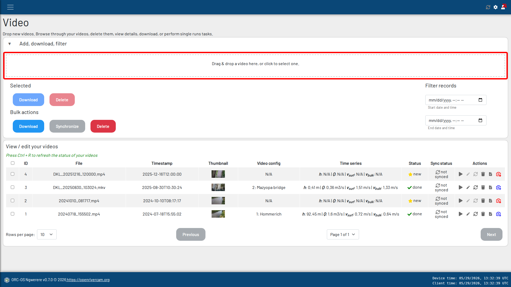
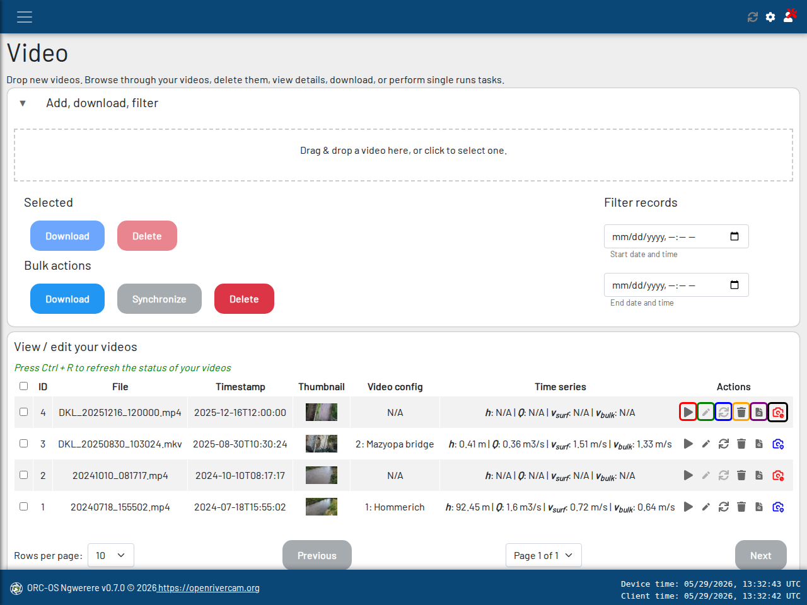
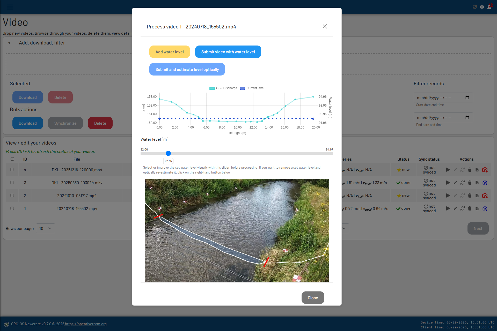

Videos#
The videos page gives detailed access to all your video data. On the main page you will see three main sections:
A zone where you can drop new videos.
A filter and bulk action section. Here you can filter videos on dates, do bulk selection for downloading, synchronizing and deleting video records, or do downloads and deletes on selected items in the video list.
A list with video records, including their status, associated time series (if any), and a number of actions.
Uploading new videos#

Screenshot of the videos page with the upload dropzone indicated in red.#
You can manually upload a video. Just drop a file in the zone (see above) or click to select one. After selecting a video file, select the date and time and click “Upload”. That’s it! A new fresh record will appear in the list at the associated date. If you don’t see it, it could be that it has a relatively old date compared to other videos. You can scroll down, go to next pages, or filter out specific dates to find it.
During uploading, the time stamp provided will be compared against time stamps of available water level records. If you have already setup a water level query and the timestamp of the video is close enough to a recorded water level sample timestamp, then the water level will be automatically matched against the video. You will then see this water level appear in the “Time series” field in the table.
Filtering and bulk actions#
At some point, you may need to perform many times the same action on a large amount of videos. For this, we designed “bulk actions”. It works as follows: click on the desired actions, “Download”, “Synchronize” or “Delete”. A pop-up will appear requesting a start and end date. Select these and click on “Confirm <action>”. This will execute the selected action. Consider for instance the following use cases:
ORC-OS is installed on a station, which has been offline for a while due to lack of data in a 4G bundle. After resupplying data, synchronize those records that have been missed in a designated time interval with just one command.
A station is installed at a remote site with no internet connection. You may drive by the location, connect a laptop and simply download all video records interactively once every week to keep track of the data collection.
A station is taken down and reinstalled at another location. You may want to delete a large amount of old records, that have already been downloaded or synchronized with a LiveORC server.
Downloading and deleting can also be done on manually selected records using the buttons under the “Selected” section.
Note
when choosing a bulk action for a large period, indexation may take a while and may cause the web interface to not respond for a while. Once indexation is done, all processing occurs in a separate thread and the web interface should be available again. Press Ctrl+R a few times in case you want to manually refresh.
Warning
Deleting a record means that all data is deleted from disk. This includes the video file itself, thumbnail, and any associated files created during processing, such as NetCDF files and log files. This cannot be reversed! The associated time series record will always remain available, so time series and rating curves are preserved.
Video list#
Videos are by default ordered on the Timestamp field. This ensures that the latest video in terms of the associated time stamp is always at the top the table. At the bottom of the table, you can select the amount of records to display in one page, and browse through the pages.
A few important remarks should be made about the records:
each record may have an associated “Time series” field, which in turn may contain water level, discharge, surface velocity and bulk velocity estimates. As mentioned above, this time series field may also only contain a water level if no processing has been performed yet, or nothing at all if no close (in time) water level record was found, or water levels are not available at all.
each record has several “Actions” available: these include a “Play” button for displaying the video and results of the analysis, a “Sync” button for interactive syncing of an individual record, an “Edit” button, with which you can supply a new or modify an existing water level with a video in case the water level is not available or inaccurate, a “Delete” button for removing an individual record, a “log file” button, bringing up a log file for the specific analysis, and a “video configuration” button which can have different icons and color codes dependent on its state, as explained further down.

Screenshot of the videos page with action buttons highlighted. Red: Display video and analysis results Green: Synchronize video with LiveORC server Blue: Edit water level and (re)process video Orange: Delete video record and associated files Purple: Show processing log file Black: Select or edit video configuration#
Below we briefly describe the buttons, all indicated with a different color in the screenshot above. For the “video configuration” button, we also refer to the section on video configuration where the entire video configuration procedure is more elaborately described.
Editing your video’s water level and reprocess#
{kind=link}

Screenshot of the video editing page with water level editor sidebar.#
Click the edit button to bring up a side view of the cross section and the associated water level (if any). In this view you can now start editing the water level with a slider. If there is no water level associated yet, create a new record by clicking on “Add water level”.
If the video is associated with a fully prepared video configuration, you can process or reprocess (if you already processed with different settings) the video into velocity and flow estimates. You may even do this without changes in the water level, e.g. after having made changes in the video configuration.For this, click on “submit video with water level” to process it. You may also decide to let ORC estimate the water level for you. Click on “Submit and estimate level optically” to use this option. This is only possible if a cross section for estimating water levels was chosen in the video configuration.
Syncing a video#
If a video is not synced during an earlier occasion, you may also sync it manually after processing. This button is only available when a LiveORC server and site id have been set up. For bulk syncing of videos between two dates, please use the sync bulk action.
Displaying your video#
Click the play button to see the original video, an analysis augmented reality view of results and the time series and
status.
If the file is synced to a LiveORC server, you will also get a direct link to the LiveORC record. This leads to a login
page for the LiveORC API server you have setup. The augmented reality result image and time series are only available
when the video has been processed into water levels, velocities, and discharge. Otherwise the associated fields are
left empty with a - sign.
Deleting a video#
Click on this button to delete the entire video record. You will get a warning before deleting. This is an irreversible action and removes all associated files and the database record!
Checking the log file#
Once a video has been processed, you can check the detailed logs here. If you notice a video processed with errors, it is recommended to check the log. If some videos succeed and others not it is often related to optical water level estimation not succeeding because the water level cannot be estimated reliably. In this case you may set the water level manually and then process with your own set water level.
Preparing a video configuration#
The last button in the row indicates the video configuration section for the specific video. This button can have several icons. The meaning of these are described briefly below. For preparing a video configuration, a sample video that shows several control points must be available. For this part, we refer to the video configuration section.
Icon |
Description |
|---|---|
No video configuration is present. You can either select an existing video configuration (which was created using another video as sample video) or start creating a video configuration based on the current video. For creating a configuration, the considered video must be made during your survey and show control points for which real-world coordinates were measured. See the field survey guide for more information on how to measure the required control points and cross-section. |
|
A complete configuration, made with another video as sample video is attached to this video. You can perform velocity and discharge processing with this video. This normally occurs with videos taken with exactly the same camera, position and direction as the sample video, but at a different moment with different conditions. If you collect and process videos automatically, most of your videos will fall in this category. |
|
A complete configuration was made with this video as sample video. If you edit the configuration, it is recommended to do that from this video so that control points are visibleand the water level can be fine tuned if necessary. If this blue icon is shown, the video configuration is ready to be used for automated processing with new incoming videos. |
|
A configuration is available but it is not yet complete. Click on the icon and select edit to make the video configuration complete. The camera position and orientation may still be missing, water level settings may be missing and a cross section for discharge estimation may not yet have been selected. You can also select a cross section for optical estimation of water levels, but this is not needed if you use a separate device to estimate the water level. |